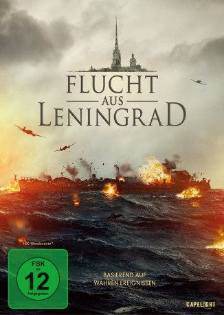

#11421 Flucht aus Leningrad
 
 IMDB-Wertung: 6.8 / 10
IMDB-Wertung: 6.8 / 10  Metascore: 0
Metascore: 0 
September 1941: Der deutsche Belagerungsring um Leningrad hat sich beinahe komplett geschlossen. Dem jungen Liebespärchen Nastya und Kostya gelingt es in allerletzter Minute die Flucht an Bord eines der wenigen Boote, die die Stadt verlassen können. Als ihr Schiff auf der Ostsee nachts im Sturm leckschlägt und zu sinken beginnt, haben sie keine Aussicht auf Rettung. Kein sowjetisches Schiff ist in der Nähe, stattdessen spüren deutsche Flugzeuge das havarierte Schiff auf ... In russischer Sprache
Jahr: 2019
Dauer: 97 Minuten
FSK: 12
Land: Russland Studio: Capelight PicturesTonspuren:
Untertitel: Deutsch,
Auflösung: 1080p (1920x808) Größe: 5222 MB
Genre: Action, Drama, Krieg
Regisseur: Aleksey Kozlov
Drehbuch: Aleksey Kozlov
Soundtrack: Yuriy Poteenko
Darsteller:
- Gela Meskhi als Petruchik
- Andrey Mironov-Udalov als Kostya
- Maria Melnikova als Nastya
- Anastasiya Melnikova als Nastya's mother
- Pavel Druzhinin als Blinov
- Mariya Kapustinskaya als Sveta Goncharova
Datei: X:\2019(A-F)\Flucht aus Leningrad (2019, FSK12, 1920x808).mkv seit 03.07.2019
Festplatte: HD 2018(G-Z)-2019(A-Z)
 Es gibt insgesamt 60 Filme in der Gruppe '2019(A-F)'
Es gibt insgesamt 60 Filme in der Gruppe '2019(A-F)'